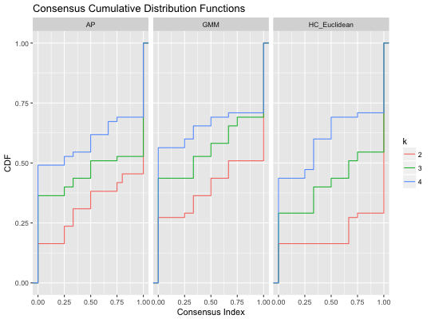
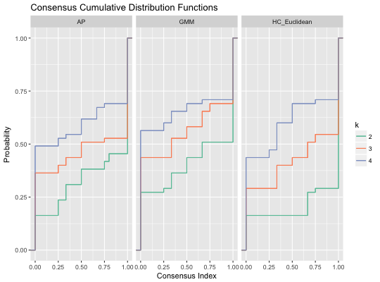
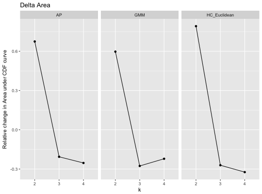
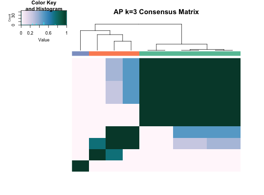
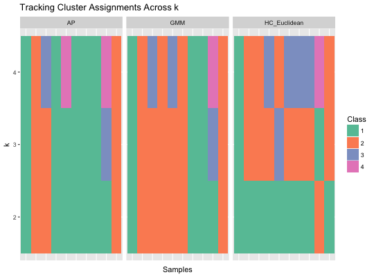

Graph cumulative distribution function (CDF) graphs, relative change in area under CDF curves, heatmaps, and cluster assignment tracking plots.
graph_cdf(x) graph_delta_area(x) graph_heatmap(x, main = NULL, ...) graph_tracking(x) graph_all(x, ...)
consensus_cluster, or a list of multiple objects
from consensus_clusterNULL (default), the titles will be taken
from names in xheatmap.2Various plots from graph_*{} functions. All plots are
generated using ggplot, except for graph_heatmap, which uses
heatmap.2. Colours used in graph_heatmap and
graph_tracking utilize RColorBrewer
palettes.
graph_cdf plots the CDF for consensus matrices from different
algorithms. graph_delta_area calculates the relative change in area
under CDF curve between algorithms. graph_heatmap generates consensus
matrix heatmaps for each algorithm in x. graph_tracking tracks
how cluster assignments change between algorithms. graph_all is a
wrapper that runs all graphing functions.
# Consensus clustering for 3 algorithms library(ggplot2) set.seed(911) x <- matrix(rnorm(100), ncol = 10) CC1 <- consensus_cluster(x, nk = 2:4, reps = 5, algorithms = c("hc", "ap", "gmm"), progress = FALSE) # Plot CDF p <- graph_cdf(CC1)# Change y label and add colours p + labs(y = "Probability") + stat_ecdf(aes(colour = k)) + scale_color_brewer(palette = "Set2")# Delta Area p <- graph_delta_area(CC1)# Heatmaps with column side colours corresponding to clusters CC2 <- consensus_cluster(x, nk = 3, reps = 5, algorithms = "ap", progress = FALSE) graph_heatmap(CC2)#> AP k=3 #> rowInd Integer,10 #> colInd Integer,10 #> call Expression #> carpet Numeric,100 #> rowDendrogram List,2 #> colDendrogram List,2 #> breaks Numeric,257 #> col Character,256 #> colorTable List,3 #> layout List,3# Track how cluster assignments change between algorithms p <- graph_tracking(CC1)